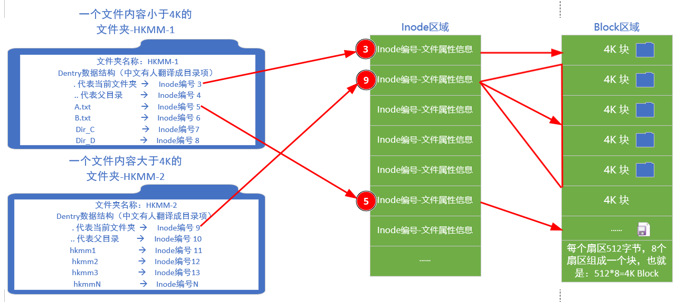

[Linux基础]-1-目录基础命令
引言
这篇文章记录7个和目录相关的常用Linux命令，也是Linux中最使用频率最高的几个命令，并借这些命令，理解Linux中理解Inode、目录文件、Dentry的概念。
文章目录
- 0×0.理解Inode、目录文件、Dentry
- 0×1.ls列出详细信息
- 0×2.cd切换目录
- 0×3.pwd查看当前目录
- 0×4.rm删除文件或目录
- 0×5.rmdir删除目录
- 0×6.mv移动目录或文件
- 0×7.cp复制目录或文件
- 0×8.视频演示
0×0.理解Inode、目录文件、Dentry
首先来看一下Linux中关于硬盘的一些描述：
我们的文件数据储存在硬盘上，不论是机械还是固态硬盘，在Linux的XFS或者Ext文件系统中，为了提升存取效率，文件系统默认用4KB也就是4096字节大小作为一个储存基数，来从硬盘中存取数据，例如一些文件只会占用一个4K大小的硬盘空间，而有些则会占用多个4K大小的硬盘空间。
但除了文件数据之外，还必须找到一个地方储存文件的各种属性信息，也就是常说的元信息，例如文件的大小创建时间等等，Linux的文件系统为此专门在硬盘中划分了一个叫做inode的区域，英文全称叫做index node，中文译名为"索引节点"，文件的元信息就被存储在这一个个inode节点中，每个inode节点的大小，一般是128字节或256字节，这就是我们看到磁盘格式化之后，能够储存数据的空间大小会小于实际大小的原因之一，因为Inode也会消耗硬盘空间。
那么这个储存在Inode节点中的文件的元信息包含了哪些内容呢？可以用stat命令看到其中的一些内容，包括文件的Inode编号、文件的创建者、文件的创建访问和修改的日期、文件的权限信息、文件的大小，文件数据在磁盘的位置信息等等，这个位置信息是一个指针，指向了磁盘中的一个数据块，Linux文件系统根据Inode中存放的这个位置信息，就定位到文件在硬盘中储存数据的位置，然后就能进行读写。
现在我们知道，Inode节点中包含了文件的一些属性信息，系统可以通过Inode节点中的信息找到我们储存的文件数据进行读写，但Inode在设计之初，并没有考虑将文件名存放在Inode节点里面，也就是说Inode节点中是找不到文件名的，那么文件名存在哪呢？
想要知道这个问题的答案，必须理解Linux 中最经典的一句话：叫做「一切皆文件」，那么就意味着，我们看到的文件夹，实际上也是一个个储存在硬盘数据块中的数据文件，而恰巧，设计者将所有文件的文件名都储存在这个“文件夹文件”中，在这个“文件夹文件”中不仅仅储存了文件名，还储存了文件名到Inode节点编号的映射关系，这种映射关系，官方命名叫做Dentry数据结构，有些中文翻译把它翻译成“目录项”，就是下面图片左边的文件夹中的内容。
在文件夹文件的Dentry结构中，包含了当前文件夹的名称以及对应的Inode节点编号，不仅如此，还包含了父目录、所有子目录、子文件的名称和Inode节点编号。
这就意味着，当Linux启动的时候，文件系统只需要通过读取Inode节点信息，先找到根目录的Inode节点信息，就能够读取根目录文件中的Dentry结构，而根目录的Dentry结构中就包含了下面所有子目录和文件的名称以及对应的Inode节点编号，这样系统将根目录作为起点，就能够在内存中构建一个完整的系统文件目录树，但是Linux内核不会去将所有的目录文件的Dentry结构都缓存到内存中，这样内存会爆炸掉，初它只会缓存使用过的目录，没有打开过的目录不会缓存。
看到这里，大家是不是明白为什么Linux的命令行对目录和文件的操作会那么快了吧？实际上这些操作只是在改动内存中的那个Dentry目录树结构，系统会在适当的时机将改动写到硬盘的目录文件中，而不会频繁的读写硬盘影响性能。
这就意味着，当我们"双击进入"或者通过ls命令来查看一个文件夹中的内容的时候，实际上是在读取这个文件夹文件的Dentry数据结构中的数据然后展示出来。
现在是不是觉得，我们眼前的这个操作系统有点黑客帝国似曾相识的味道，我们看到的操作系统图形界面，实际上只是系统为了迎合人类习惯而构造的假象而已？怎么样，勇敢的少年，准备好跟着我一起进入字符的世界了吗？
0×1.ls列出详细信息
ls命令是list的缩写，用来列出终端所在目录中的文件，ls常用参数列表如下：
ls -a 列出目录所有文件，包含以.开头的隐藏文件
ls -A 列出除.及..的其它文件
ls -r 反序排列，配合S和t使用（ls排序默认从大到小，反序之后从小到大）
ls -t 以文件修改时间排序
ls -S 以文件大小排序
ls -h 以易读大小显示（默认文件大小显示为字节，加上h之后显示为k，mb等形式）
ls -l 详细信息显示，除了文件名之外，还将文件的权限、所有者、文件大小等信息详细列出来
ls -i 显示每个文件的inode值，inode (index node）
ls命令演示：
ls #直接列出根目录下的文件和文件夹（在不同终端中，目录和文件夹是以不同的颜色显示的）
ls -a #列出所有文件，.代表当前文件夹，..代表当前文件夹的上一层目录
ls -l #列表形式，列出文件的详细信息
ls -alSh #以文件大小排序，用列表形式列出所有文件和文件夹的详细详细，并且以易读的方式显示
ls -alShr #和上一条命令一样，r参数会将结果反序排列
ls -alth #以文件修改时间排序，显示目录中文件和文件夹的详细信息
ls | sed "s:^:`pwd`/:" #列出当前文件夹中所有文件和文件夹的绝对路径
ls hackmm* #列出所有hackmm开头的文件，*是通配符，代替任意多个字符
ls -i #列出所有文件和文件夹的inode信息
ls -il #详细显示文件和文件夹详细，并且包含inode
0×2.cd切换目录
cd是Change Directory的缩写，意思为改变目录，用于切换终端所在目录：
cd / #切换到根目录
cd ~ #切换到当前用户的家目录
cd /home/mm #切换到home目录下的mm家目录
cd - #切换到上一个目录
cd !$ #将上一个命令的参数当做cd的参数使用
0×3.pwd查看当前目录
pwd是Print Working Directory的首字母缩写，用于查看终端当前处在哪个目录内：
pwd #查看当前目录绝对路径
0×4.rm删除文件或目录
rm是Remove的缩写，用于删除目录或者文件：
rm test.txt #直接删除当前目录下的文件test.txt
rm /home/mm/test.txt #使用绝对路径，删除mm家目录下的test.txt
rm -i *.txt #删除当前目录下所有.txt结尾的文件，并且逐个询问如果输入y就删除
rm -r test_dir #删除目录，需要加-r参数
rm -r test_dir test.txt 12345.mp4 一次性删除一个文件夹和两个文件
rm -rf *.log #不询问，强制删除当前目录下的.log结尾的文件
find . -inum {inode号} -exec rm -rf {} \; #用inode号来删除当前文件夹下的名称不规则的文件或者文件夹，请将{inode号}替换成ls -i中看到的inode号码
0×5.rmdir删除目录
rmdir是Remove Directory的缩写，用于删除空目录或者空的目录结构：
rmdir test #如果test是一个空目录，就能直接删除
rmdir -p test/sub1/sub2 #使用-p参数，如果test下面只有一个sub1，并且sub1下面只有一个sub2，并且都是空目录，就能一并删除
除非用作特殊判断，否则使用rm -rf命令删除目录会方便很多。
0×6.mv移动目录或文件
mv是Move的缩写，可以用来移动文件或者将文件改名：
mv hackmm hackmm.com #将hackmm文件改名为hackmm.com
mv h1 h2/ h3 hk/ #将h1 h2 h3，移动到hk文件夹中，其中h2为文件夹
mv * hk/ #将当前目录所有文件，移动到hk目录下
mv -i * ../ #将当前目录所有文件，移动到上一层目录中，如果遇到重名文件，提示是否覆盖
0×7.cp复制目录或文件
cp是Copy的缩写，可以用来复制文件或文件夹：
cp hk1.txt hk2.txt #将hk1.txt复制一份保存为hk2.txt
cp -a hk1.txt hk2.txt #将hk1.txt复制一份保存为hk2.txt，并且保存hk1.txt的'访问时间'和'修改时间'不变
cp -r hackmm/ hackmm_com/ #将hackmm目录复制一份保存为hackmm_com目录
cp -r hackmm/ hk1.txt hk2.txt hackmm_com/ #将前面一个目录和两个文件复制到hackmm_com目录
cp -i hk1.txt hk2.txt hackmm_com/ #将前面两个文件复制到hackmm_com目录，如果有重名文件提示是否覆盖
cp -s hk1.txt hk1_link.txt #创建一个连接文件hk1_link.txt，相当于一个快捷方式，打开hk1_link.txt相当于打开hk1.txt
0×8.视频演示
点击下方视频标题，可以进入B站观看高清版本
【第20天】Linux基础-20-Linux目录的灵魂Dentry数据结构-大一女新生挑战一年精通网络安全-渗透测试-黑客技术-Linux基础，我无所畏惧
第一篇文章中演示的虚拟机的下载可以通过我这个uc网盘去下载，里面包含了很多现成的系统镜像，还有虚拟机的激活码，也可以去官方下载，千万别去其他地方下精简版，很多问题都出在这里。网盘包含了最新的Windows+激活软件，流行的Linux镜像，会持续更新。下面两个网盘内容一致
*「虚拟机全套软件+ISO镜像文件+持续更新」夸克：点击打开
*「虚拟机全套软件+ISO镜像文件+持续更新」UC:点击打开 密码：8s6H